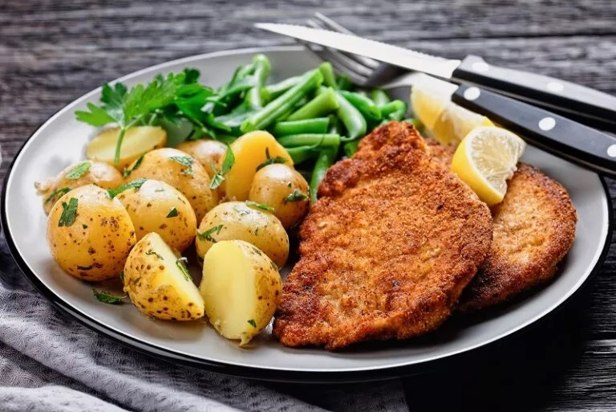

Here you can find schabowy recipe.

Schabowy is traditional polish dish.
List of ingredients:
- - fine piece of pork meat - 300g
- - egg - 1 piece
- - all purpose flour - 50g
- - bread crumbles - 50g
- - salt and pepper - as you wish
Flowchart:
- slice pork meat into 1cm slices
- add salt and pepper
- cover meat with flour, egg and bread crumbles
- fry meat on well oiled pan
Return to mainpage